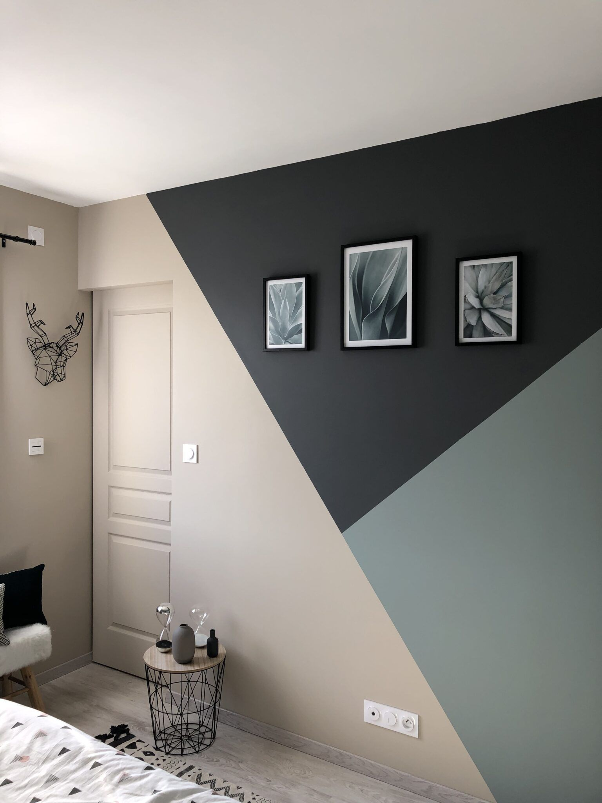

<div class="body3 ">

  <section class="u-section-3 ">
      <div class="u-sheet ">
        <div class="u-layout-wrap-1 ">
          <div class="u-layout-row ">

            <div class="u-container-layout col-xs-8 col-sm-6 col-md-3">
              
              <h2 class="u-text u-text-1">
                COMBINACIONES PARA DIFERENTES ESPACIOS DE PAREDES
              </h2>
              <p class="u-text u-text-2">La tendencia de paredes bicolor podemos verla en multitud de imágenes en páginas de decoración y la verdad es que no nos extraña. Esta forma de pintar las paredes a medias queda muy bien y además es una forma de actualizar tus paredes sin tener que pintarlas por completo de arriba a abajo, ya que puedes aprovechar el color de base. Mucho más sencillo si lo hacemos nosotros mismos y con ahorro de pintura incluido, ¿verdad? Te damos algunas ideas de paredes a medio pintar que estamos seguros de que te gustarán para tu casa, aunque puede que la última no tanto…</p>
            </div>

            <div class="col-xs-8 col-sm-6 col-md-3">
              <div class="u-container-layout">
                
              </div>
            </div>

            <div class="col-xs-8 col-sm-6 col-md-3">
              <div class="u-container-layout">
                <h2 class="u-text u-text-1">
                  PAREDES EN DOS COLORES CON DISEÑOS ORIGINALES
                </h2>
                <p class="u-text-3">Otra forma interesante de hacer la separación entre ambos colores de forma más elaborada es siguiendo un dibujo. Para los diseños curvos es mejor que te ayudes de una plantilla, mientras que para los angulosos puedes hacerlos sólo con cinta de carrocero. La última idea queda muy bien en una habitación infantil simulando una montaña, ¡ideal para los más aventureros!</p>
                
              </div>
            </div>

          </div>
        </div>
      </div>
  </section>

</div>
